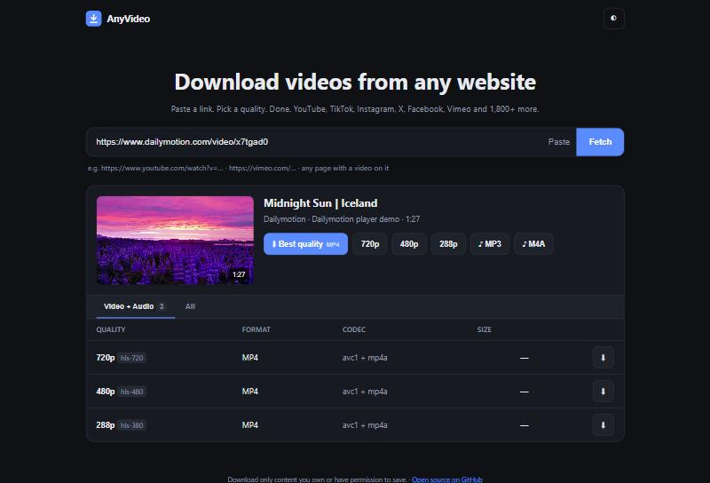

Paste a link, pick a quality, get an MP4 or MP3. Open source, no ads, no sign-up, and it runs on your own computer, so it stays free for everyone.

Every option is free. Most need uv (a one-line install) and ffmpeg.
Opens the downloader in your browser. Nothing to set up beyond uv.
uvx --from git+https://github.com/aethernode42/anyvideo-downloader anyvideoDownload straight into a folder, pick a quality or save audio only.
uv tool install git+https://github.com/aethernode42/anyvideo-downloader
anyvideo "https://youtu.be/…"
anyvideo get "<link>" -q 720
anyvideo get "<link>" -a mp3A “Download this video” button and right-click menu in Chrome, Edge and Firefox. Download the extension zip from the latest release and load it, following the steps in the README.
Ask Claude “download this video as MP3” and it does it for you.
/plugin marketplace add aethernode42/anyvideo-downloader
/plugin install anyvideo-downloader@anyvideoEverything included (ffmpeg, Deno). Great for a home server.
docker run -p 8000:8000 ghcr.io/aethernode42/anyvideo-downloaderClone it, change it, contribute back.
git clone https://github.com/aethernode42/anyvideo-downloader
cd anyvideo-downloader
uv run anyvideoBuilt on yt-dlp, the most widely used open-source downloader.
Yes. It's free and open source under the MIT license: no ads, no sign-up, no limits. It runs on your own computer, so nobody has to pay for a server.
YouTube, TikTok, Instagram, X (Twitter), Facebook, Vimeo, Reddit, Dailymotion, Twitch, SoundCloud and more than 1,800 others, plus most pages with an HTML5 video.
Yes. Use the MP3 or M4A button in the app or the extension, or run anyvideo get "<link>" -a mp3.
Videos protected by DRM (Netflix, Disney+, some Vimeo videos) and live streams can't be downloaded. Some sites need you to be logged in; the README explains how to use your browser's cookies. If a site that used to work stops working, update to get the newest yt-dlp.
The full source code is public on GitHub and tested automatically on every change. It runs locally, so your links and files never pass through anyone else's server.